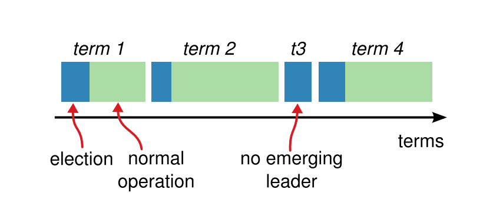
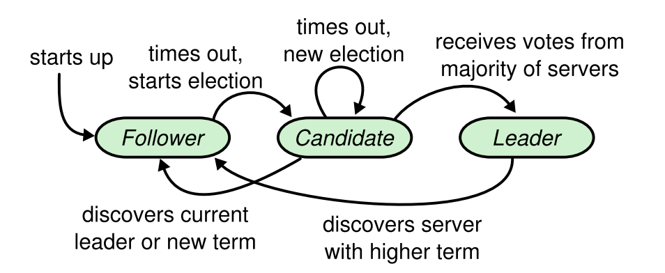
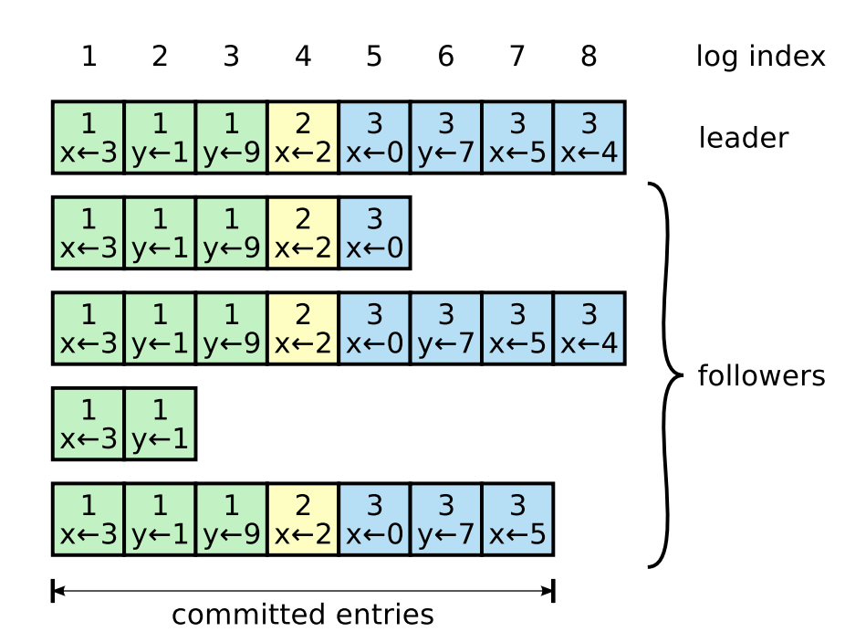

Raft 共识算法¶
- Raft 论文： https://raft.github.io/raft.pdf
- MIT 6.824 课 讲义 labs
Leader 选举¶
Raft 集群中的节点分成以下三种角色：
- Leader 主 接受客户端请求，写入日志，并将日志同步给 Follower，当日志已经同步给大多数节点后，提交日志并告诉 Follower 提交日志。
- Follower 从 接收 Leader 的日志同步，在 Leader 告知日志可以提交之后，提交日志。
- Candidate 候选主 Leader 选举过程中的临时角色，候选的下一任主。
Raft 将时间划分成一段一段的 Term（任期），每次选举开始一个新的 Term，如果选举出了主，那么其将作为该 Term 的主一直处理客户端的请求直到有节点发起新的选举（新选举，新 Term）。如果没有选出主，则开始新的选举（新选举，新 Term）。
{kind=link}
Raft 算法中节点之间通过 RPC 通信：
- RequestVote RPC： Candidate 在选举期间发起。
- AppendEntries RPC： 复制日志 RPC，Leader 也用其发送心跳消息（不带日志）。
- InstallSnapshot RPC: Leader 使用该 RPC 来发送快照给太落后的 Follower。
基本的一致性算法只需要前两种类型的 RPC。
Raft 的主会周期性的广播心跳消息来维系其地位。节点在启动的时候处于 Follower 角色并且会随机设定一个选举超时时间 electionTimeout。
如果选举超时时间内没有收到来自 Leader 的心跳消息，那么 Follower 就转换为 Candidate 角色，开始一次新的选举，通过 RequestVote RPC 要求其它节点投票，如果其赢得了多数选票，那么它就成为新的 Leader。Leader 会立刻发出心跳消息，其它角色的节点收到新 Leader 的消息后切换为 Follower 角色。
{kind=link}
日志复制¶
Leader 选出后，就开始接收客户端的请求。Leader 把请求作为日志条目（Log entries）加入到它的日志中，然后并行的向其他服务器发起 AppendEntries RPC 复制日志条目。当这条日志被复制到大多数服务器上，Leader 将这条日志应用到它的状态机并向客户端返回执行结果。
{kind=link}
不写了，看代码吧🤦： https://github.com/chanfung032/6.824/tree/master/src/raft